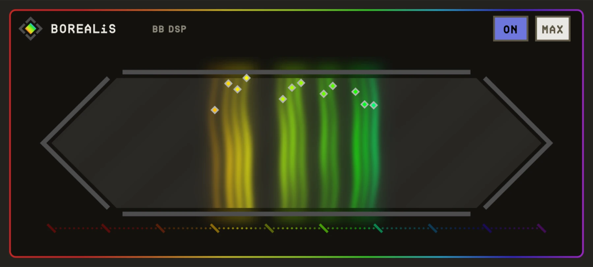

OVERVIEW
BOREALiS builds sound from harmonics, and shows each one as a frosted light at a fixed place across the window: low notes on the left, high on the right, coloured red to violet like the spectrum. A light only shines while it is playing, and its brightness is its volume.
Click anywhere in the window to place a constant drone tone there. MIDI notes play on top of the drones. Drop an audio file on the window and BOREALiS finds its strongest pitches and adds them to the drone.

QUICK START
- 01Load BOREALiS as a software instrument.
- 02Play a note and turn HARMONICS up to add more lights above it.
- 03Click in the light field to place drone tones. Higher clicks are louder.
- 04Drag an audio file onto the window to turn it into a drone.
HOW IT WORKS
Fixed map
Every pitch has its own place on screen, so chords and drones are readable at a glance.
Drawn tones snap
Clicked tones snap to the nearest semitone between C1 and C10.
Audio to drone
A dropped file is scanned for up to 12 prominent semitones; when a pitch is already in the drone, the louder level wins.
CONTROLS
Values in the dark wells are the defaults.
SOUND
PLAYING
TIPS
- Few harmonics with high STRETCH gives glassy bells.
- Drop a vocal or a field recording to make a drone in its key.
SPECS
- TYPE
- Instrument (AU aumu), VST3, Standalone
- INPUT
- MIDI, audio files by drag and drop
- OUTPUT
- Stereo